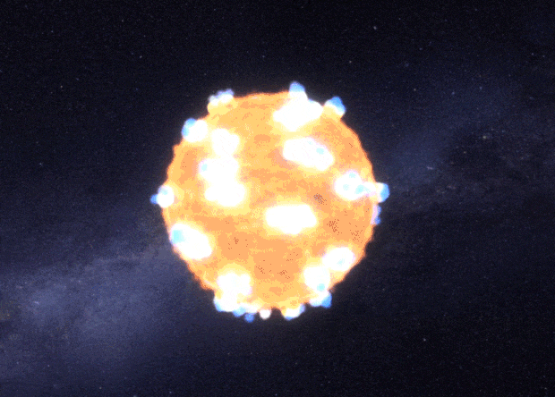
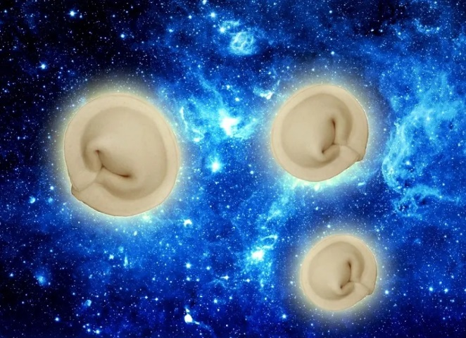

Вопрос о существовании Вселенной стал всерьёз рассматриваться учёными лишь около двух веков назад. Ранее все попытки учёных, пытавшихся опровергнуть точку зрения церкви, в большинстве случаев заканчивались для первых плачевно. Когда же появилась возможность высказывать своё мнение, не боясь оказаться на костре, возникли сразу несколько противоречащих религии теорий.
В начале XVIII века шведский учёный Эмануэль Сведенборг предложил гипотезу, согласно которой все структуры в природе образуются по одним и тем же принципам. Атомы и звёзды, по его мнению, образуются благодаря присущему материи вихревому движению частиц. Сведенборг также считал, что Млечный Путь является плоской системой звёзд. Он не признавал закона всемирного тяготения Ньютона и полагал, что звёзды удерживаются магнитными силами. Гипотеза шведского учёного оказалась во многом ошибочной, однако, именно она известна как одна из первых динамических моделей звёздной системы.

Эммануил Кант в одной из первых своих работ на примере возникающих под действием Луны приливов и отливов обращает внимание на зависимость одних небесных тел от других. В 1755 году появилась его работа «Всеобщая естественная история и теория неба», которая не была воспринята всерьёз его современниками, но стала хорошим подспорьем для его последователей. Кант считал, что вселенная имеет следующую иерархическую структуру: планеты и кометы составляют Солнечную систему, Солнце и звёзды входят в Млечный Путь, а другие звёздные миры вместе с Млечным Путём образуют ещё более крупную систему.
Кант предполагал, что в начальном состоянии Вселенная была заполнена разреженной материей, между частицами которой действуют силы тяготения, которые приводят их в вихревое движение. Звёзды и планеты сформировались, когда благодаря химическим силам создались начальные уплотнения в первичной материи. Постепенно под действием тяготения масса центрального уплотнения увеличивается. Затем туманность разбивается на Солнце, которое является источником энергии и обладает наиболее сильным тяготением, и планеты.

В 1927 году бельгийский учёный Жорж Леметр высказал идею о расширении Вселенной из сверхплотного состояния. Впоследствии эту теорию подтвердило открытие так называемого реликтового излучения, которое ещё называют Большим Взрывом. По мнению учёных, он произошёл 13-15 миллиардов лет назад – таков возраст вселенной. В настоящее время большинство учёных поддерживают именно версию об образовании Вселенной в результате Большого Взрыва, но так ли это было на самом деле, точно не может сказать никто. Остаются без ответа и другие вопросы астрономии: что привело к Большому Взрыву, как появились скопления звёздных систем - галактики и другие. Ответы на эти вопросы продолжают искать современные учёные.

1. В молодости была горячее
Среди ученых большинство согласны с теорией Большого Взрыва. Подтверждения получили, когда обнаружили реликтовое излучение. Конечно, мы не можем увидеть момент своими глазами, но экстраполяция доказывает, что Вселенная была бесконечно раскаленной в начале и стала охлаждаться при расширении.
Исследователи полагают, что в первые минуты расширения температура достигала миллиарда Кельвинов. А вот в первой секунде – 10 миллиардов Кельвинов. Чтобы вы понимали, на сегодня эти показатели – 2.725 Кельвина.
2. Со старостью приходит холод
Отслеживание наиболее удаленных галактик подтверждает, что расширение Вселенной набирает скорость. Если приплюсовать информацию о постоянном охлаждении, то получим финал в виде Большого замораживания.
Это значит, что пространство лишится полезной теплоты (энергии) и все движение остановится. В пользу этого свидетельствуют и показания WMAP (изучает реликтовое излучение).
3. Диаметр Вселенной – 150 миллиардов световых лет
Конечно, подобная цифра может сбить с толку, так как сильно отличается от возраста. Но все объясняется ускорением расширения.
4. Возраст – 13.7 миллиардов лет
Если вы не верите, то знайте, что эти вычисления достоверны с точностью в 1%. Благодарить стоит WMAP, изучающий реликтовое излучение. Более старые методы также подтверждают подобное число вместе с измерением возраста звезд в древнейших скоплениях.
5. Земля – круглая, а вот Вселенная нет
Отталкиваясь от общей теории относительности Эйнштейна, можно говорить о трех возможных формах Вселенной: открытая, закрытая и плоская. И тут снова в игру вступает WMAP, подтверждая последний вариант. Если объединить форму с понятием темной энергии, то получим наиболее возможный прогноз конца всего – Большое Замораживание.